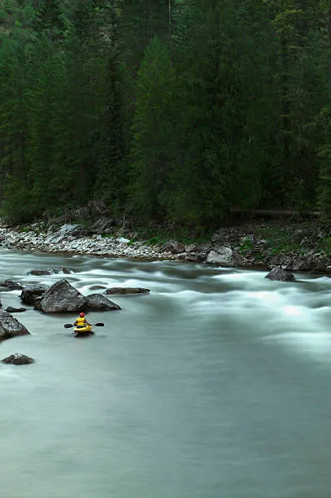

Salmon River
Known as the “River of No Return,” the Salmon River offers legendary multi-day rafting through remote wilderness, deep canyons, and fun Class III–IV rapids—perfect for adventure seekers and nature lovers alike.
Payette River
Just outside of Boise, the Payette River offers a range of rafting experiences, from gentle Class II stretches to thrilling Class IV rapids—ideal for both families and seasoned whitewater enthusiasts.
Snake River
Winding through dramatic canyons and wide open valleys, the Snake River provides scenic Class II–III rafting perfect for beginners and those looking for a laid-back float with stunning views.
Lochsa River
Renowned for its steep, technical Class IV+ rapids, the Lochsa River offers an adrenaline-packed ride through dense forests and mountain scenery—best suited for experienced paddlers seeking a challenge.

Selway River
A true wilderness adventure, the Selway River features limited access, pristine scenery, and challenging Class IV whitewater—perfect for those seeking solitude and excitement deep in Idaho’s backcountry.